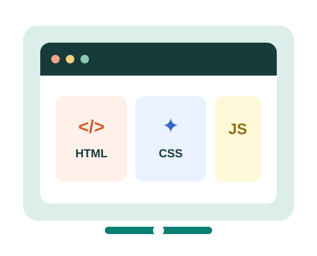

HTML
HTML provides the structure and content of a webpage, such as headings, paragraphs, images and links.
LEARN • BUILD • CREATE
Every website starts with a few building blocks. Learn how HTML, CSS and JavaScript work together to create useful and engaging experiences on the web.
Explore the basics
THE FOUNDATION
Web development is the process of creating and maintaining websites. It combines structure, visual design and programming to make pages that people can access through a web browser.
THREE CORE TECHNOLOGIES
HTML provides the structure and content of a webpage, such as headings, paragraphs, images and links.
CSS controls how a webpage looks, including its colors, fonts, spacing and layout.
JavaScript adds behaviour and interactivity, allowing a webpage to respond to user actions.
KEEP LEARNING
Explore these websites to learn more about the technologies used to build the web:
Click the button to see a small JavaScript interaction.